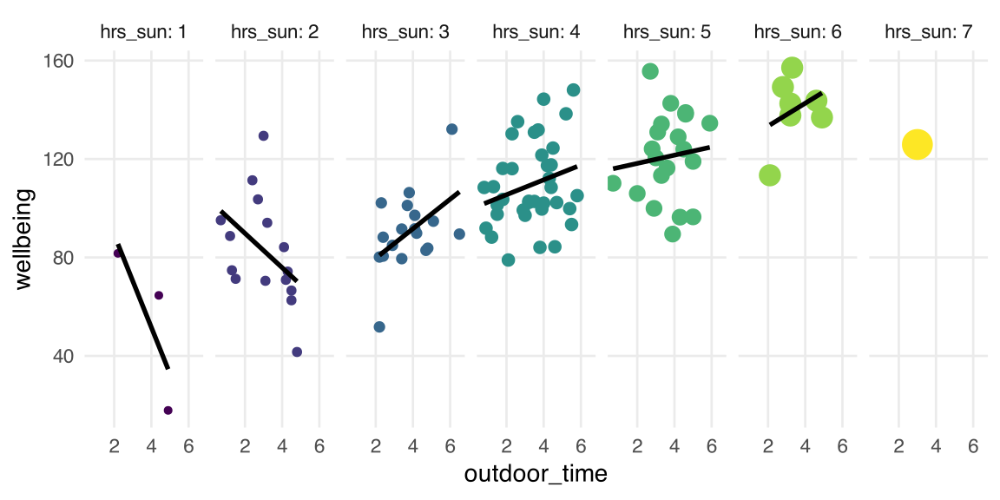
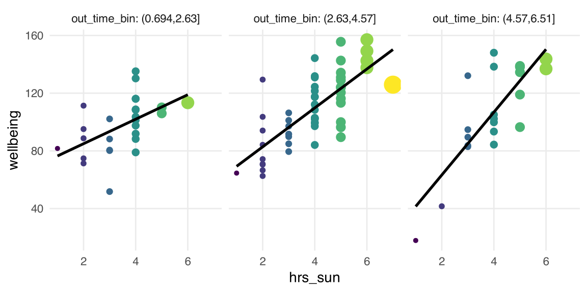
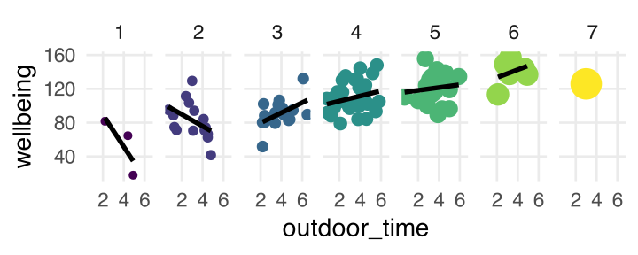
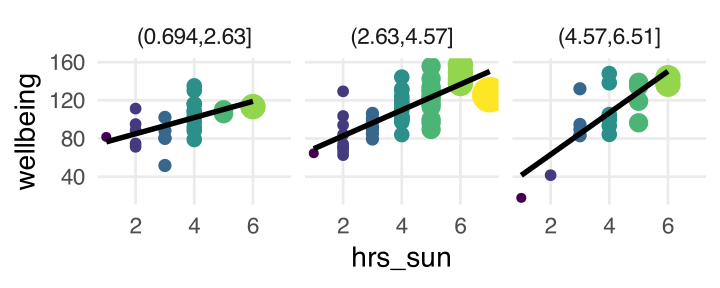
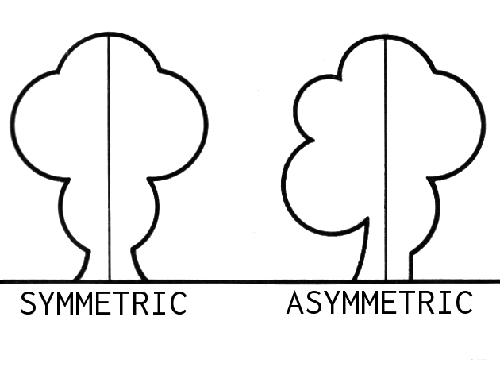
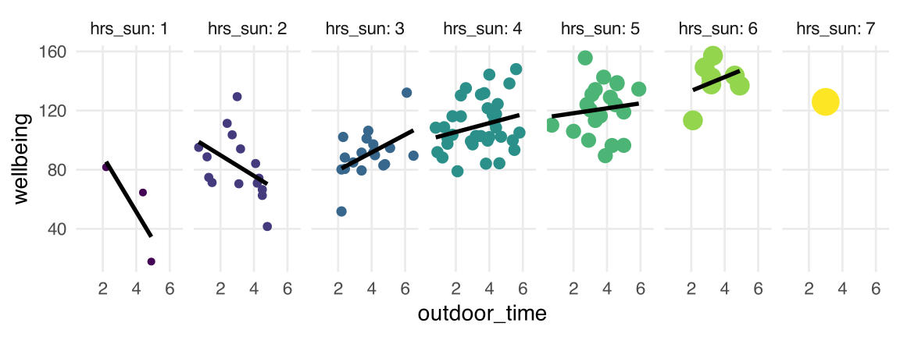
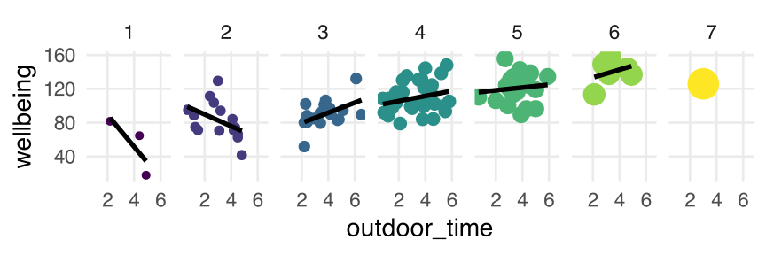

Department of Psychology University of Edinburgh 2025–2026
Course Overview
Introduction to linear Models
Intro to linear regression
Interpreting linear models
Testing individual predictors
Model testing & comparison
Linear model analysis
Analysing Experimental Studies
Categorical predictors and dummy coding
Effect coding and manual post-hoc contrasts
Assumptions and diagnostics
Bootstrapping and confidence intervals
Categorical predictors: Practice analysis
Interactions
Mean-centering and numeric/categorical interactions
Numeric/numeric interactions
Categorical/categorical interactions
Manual contrast interactions and multiple comparisons
Interactions: Practice analysis
Advanced Topics
Power analysis
Binary logistic regression I
Binary logistic regression II
Logistic regression: Practice analysis
Exam prep and course Q&A
This week’s learning objectives
How do we specify an interaction between two numeric predictors?
What does it mean when we say “interactions are symmetrical”?
What is a simple slope?
When we have an interaction between two numeric predictors, what values do we typically use to compute simple slopes?
Where we are in the analysis plan today
What’s an interaction again?
An interaction is how we allow a model to estimate that the association between one predictor and the outcome is different, depending on the value of another predictor.
How does the association between outdoor time and people’s wellbeing change, depending on the number of hours of sunlight in a day?
A plot to make interaction more obvious

Different slopes in different panels \(\rightarrow\) The association between outdoor time and wellbeing appears different for different amounts of sunlight.
Specifying the interaction model
Retrieval practice: Specifying the interaction model
In R, where both of these options have the same result:
lm(wellbeing ~ outdoor_time + hrs_sun + outdoor_time:hrs_sun, data = outdoors)lm(wellbeing ~ outdoor_time * hrs_sun, data = outdoors)
Does an interaction model need to contain each of the interacting predictors on their own, too? Yes—otherwise we’d only see how one predictor’s effect depends on another predictor, with no idea how they behave individually.
Better: Y ~ A + B + A:B
Worse: Y ~ A:B
Including each interacting predictor as well as the interaction (the “Better” example above) is an example of the “principle of marginality” … yet another terrible name for a stats concept :(
Think ahead, using our key points about multiple regression/interactions (1)
wooclap.com, enter code BIAHTI
For every predictor that goes into your model, know what zero represents.
What does outdoor_time = 0 represent?
What does hrs_sun = 0 represent?
A model’s intercept is the estimated mean outcome when every predictor in the model is at zero.
What will the intercept represent for wellbeing ~ outdoor_time * hrs_sun?
Think ahead, using our key points about multiple regression/interactions (2)
wooclap.com, enter code BIAHTI
Each predictor’s slope represents the association of the given predictor with the outcome when every other predictor is at zero.
If predictors interact, then slope estimates are conditional on the other predictor being zero. (In other words, each predictor’s slope estimate is only true when the other interacting predictor is zero.)
What will the slope of outdoor_time represent?
What will the slope of hrs_sun represent?
The interaction term tells us how much the association between one predictor and the outcome changes, when the other predictor moves from 0 to 1.
What will the interaction term outdoor_time:hrs_sun represent?
Fitting the model
m1 <-lm(wellbeing ~ outdoor_time * hrs_sun, data = outdoors)summary(m1)
Call:
lm(formula = wellbeing ~ outdoor_time * hrs_sun, data = outdoors)
Residuals:
Min 1Q Median 3Q Max
-43.008 -9.710 -1.068 8.674 48.494
Coefficients:
Estimate Std. Error t value Pr(>|t|)
(Intercept) 87.920 16.376 5.369 5.51e-07 ***
outdoor_time -10.944 4.538 -2.412 0.01779 *
hrs_sun 3.154 4.311 0.732 0.46614
outdoor_time:hrs_sun 3.255 1.193 2.728 0.00758 **
---
Signif. codes: 0 '***' 0.001 '**' 0.01 '*' 0.05 '.' 0.1 ' ' 1
Residual standard error: 17.55 on 96 degrees of freedom
Multiple R-squared: 0.5404, Adjusted R-squared: 0.5261
F-statistic: 37.63 on 3 and 96 DF, p-value: 3.631e-16
Increasing sunlight hours by 1 changes the association of outdoor_time with wellbeing by 3.3.
So, the association of outdoor_time with wellbeing when …
hrs_sun = 0 is –10.9
hrs_sun = 1 is –10.9 + 3.3 = –7.6
hrs_sun = 2 is –10.9 + 3.3 + 3.3 = –4.3
…
But wait! There’s another way to interpret the interaction term

Now the x axis shows hours of sunlight, and each panel shows a group of similar outdoor_times.
This plot shows that the association between sunlight hours and wellbeing is different, when different amounts of time are spent outdoors. The interacting variables are flipped, but the interaction is still there.
Both ways of interpreting the interaction term
Interpretation 1:

Increasing hrs_sun by 1 means that the association between outdoor_time and wellbeing changes by about 3.
Interpretation 2 flips the two interacting variables and is still true:

Increasing outdoor_time by 1 means that the association between sun_hrs and wellbeing changes by about 3.
Interactions are symmetrical
A common example of symmetry: When a shape looks the same, even when it is mirrored.

Image from Wikimedia Commons
If we have an interaction between predictors A and B, then both “mirror images” are always true:
The association between A and the outcome is different for different values of B.
The association between B and the outcome is different for different values of A.
So we say that interactions are symmetrical.
In practice, usually we choose the interpretation that’s narratively simpler or makes more intuitive sense (like I secretly did last week!)
Increasing sunlight hours by 1 changes the association of outdoor_time with wellbeing by 3.3.
So, the association of outdoor_time with wellbeing when …
hrs_sun = 0 is –10.9
hrs_sun = 1 is –10.9 + 3.3 = –7.6
hrs_sun = 2 is –10.9 + 3.3 + 3.3 = –4.3
…
Equivalently: Increasing outdoor time by 1 changes the association of hrs_sun with wellbeing by 3.3.
So, the association of hrs_sun with wellbeing when …
outd_time = 0 is 3.2
outd_time = 1 is 3.2 + 3.3 = 6.5
outd_time = 2 is 3.2 + 3.3 + 3.3 = 9.8
…
Simple slopes
Simple slopes
One of the best ways to understand an interaction is to figure out what the model thinks the values of these different slopes are:

Specifically, we want to know the slopes of the associations that the model estimates between outdoor_time and wellbeing for particular values of hrs_sun. We call these simple slopes.
A simple slope is the slope of the association between one predictor and the outcome, at a specific value of another predictor.
I’ve been showing you simple slopes when interpreting interaction coefficients. But now let’s calculate them formally!
What we need to know:
The model’s linear expression
The values of each \(\beta\) coefficient
Calculating simple slopes by hand (Example 1)
The model’s linear expression (where w stands for wellbeing):
So the line that associates outdoor_time with wellbeing, when hrs_sun = 0, has an intercept of 87.92 and a slope of –10.94. –10.94 is the simple slope.
Calculating simple slopes by hand (Example 2)
Step 1: Substitute the estimated coefficients into the linear expression.
Combine the numbers that are multiplied with \(\text{outdoor_time}\). (In math terms, we’re factoring out the variable \(\text{outdoor_time}\) from both terms that contain it.)
So the line that associates outdoor_time with wellbeing, when hrs_sun is at its mean of 3.8, has an intercept of about 99.89 and a slope of about 1.41. 1.41 is the simple slope.
JOHNSON-NEYMAN INTERVAL
When hrs_sun is OUTSIDE the interval [1.79, 4.33], the slope of
outdoor_time is p < .05.
Note: The range of observed values of hrs_sun is [1.00, 7.00]
SIMPLE SLOPES ANALYSIS
Slope of outdoor_time when hrs_sun = 2.536687 (- 1 SD):
Est. S.E. t val. p
------- ------ -------- ------
-2.69 1.88 -1.43 0.16
Slope of outdoor_time when hrs_sun = 3.800000 (Mean):
Est. S.E. t val. p
------ ------ -------- ------
1.42 1.36 1.04 0.30
Slope of outdoor_time when hrs_sun = 5.063313 (+ 1 SD):
Est. S.E. t val. p
------ ------ -------- ------
5.54 2.18 2.54 0.01
The Johnson-Neyman interval
The JN interval tells us the values for one predictor when the simple slope of the other predictor is significantly different from zero. (This is also called a region of significance analysis.)
JOHNSON-NEYMAN INTERVAL
When hrs_sun is OUTSIDE the interval [1.79, 4.33], the slope of
outdoor_time is p < .05.
Note: The range of observed values of hrs_sun is [1.00, 7.00]
When outdoor_time = 0 (mean hrs outdoors) and hrs_sun = 0 (mean sunlight hours), the estimated average wellbeing is 104.9.
outdoor_time_c
Specifically when hrs_sun = 0 (at the mean value for sunlight hours), spending an additional hour outdoors is associated with an increase in wellbeing of 1.4 points.
hrs_sun_c
Specifically when outdoor_time = 0 (at the mean number of hours spent outdoors), the sun shining for an extra hour is associated with an increase in wellbeing of 14.5 points.
Compare to the old plot: the shape is the same! Mean-centering doesn’t change the regions of (non)significance in how the predictors interact.
The big picture: Interactions, now with numeric predictors
Interactions, now with numeric predictors
Back matter
Revisiting this week’s learning objectives
How do we specify an interaction between two numeric predictors?
Exactly the same as we would for two categorical predictors!
Mathematically: Interactions are always the product of the two interacting predictors.
In R: If we have two interacting predictors A and B, we can write A*B (which stands for the individual predictors and their interaction) or A:B (which stands for just the interaction).
What does it mean when we say “interactions are symmetrical”?
Imagine we have two interacting predictors, A and B.
We can see the symmetry of this interaction because both of these “mirrored” interpretations are true:
The association between A and the outcome is different for different values of B.
The association between B and the outcome is different for different values of A.
Revisiting this week’s learning objectives
What is a simple slope?
The slope of the association between one predictor and the outcome, at a specific value of another predictor.
If we have two interacting predictors, A and B, then we could look at (for example)
the simple slope of A, when B = 0,
or the simple slope of B, when A = 100,
or the simple slope of A, when B = –5,
or …
When we have an interaction between two numeric predictors, what values do we typically use to compute simple slopes?
We typically look at the simple slope of one predictor at three specific values of the other one: its mean, its mean + 1 SD, its mean – 1 SD.
If we have two interacting predictors, A and B, then we might look at the simple slope of A
when B is at its mean minus one SD (i.e., mean(B) - sd(B)),
when B is at its mean (i.e., mean(B)), and
when B is at its mean plus one SD (i.e., mean(B) + sd(B)).
This week
Tasks:
Attend your lab and work together on the exercises
Support:
Help each other on the Piazza forum
Complete the weekly quiz
Attend office hours (see Learn page for details)
Appendix
Compare the coefficients
The old coefficients in the non-centered model, m1:
(Intercept)
87.9
outdoor_time
-10.9
hrs_sun
3.2
outdoor_time:hrs_sun
3.3

The new coefficients in the mean-centered model, m2:


 Retrieval practice: Specifying the interaction model
Retrieval practice: Specifying the interaction model